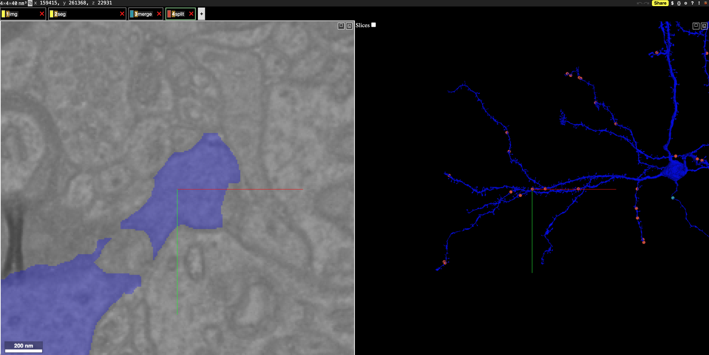
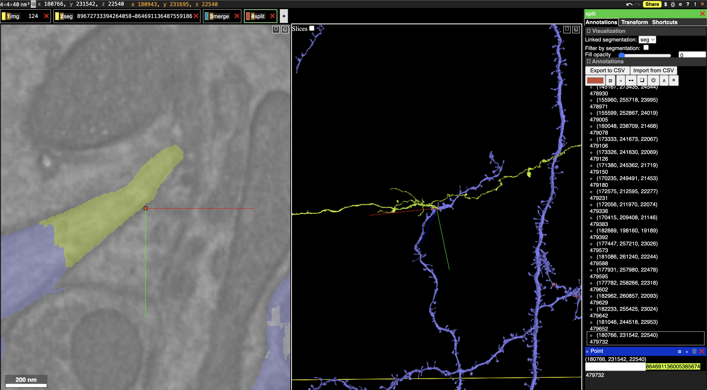

Example
Example¶
Editglancer is a small Python package for generating neuroglancer links which depict the edits to a neuron in a PyChunkedGraph. This notebook demonstrates how to use it.
Start a CAVEclient for your datastack, here "minnie65_phase3_v1". Note that you may need to change the datastack to one you have access too. For more information, first visit the CAVEclient tutorials.
from caveclient import CAVEclient
client = CAVEclient(
"minnie65_phase3_v1",
pool_maxsize=20,
pool_block=True,
)
Select a root ID (a neuron in this case) to visualize.
root_id = 864691136487559186
Generate a neuroglancer link to visualize the neuron and its edits.
from editglancer import generate_link_for_root
generate_link_for_root(root_id, client)
If everything worked the link should take you to a page that looks like this, with merges shown in blue and splits shown in red.

If you right click on the "merge" or "split" layer in the neuroglancer window, you can select individual edits. For splits, the segments which were separated from the root will be shown.

Advanced
If you are familiar with NGLUI, you can also extract the edits and pass them to a statebuilder yourself. For more on NGLUI, see the GitHub page.
from editglancer import get_detailed_operations
operations = get_detailed_operations(root_id, client)
operations.head()
from editglancer import generate_statebuilder
statebuilder = generate_statebuilder(client)
statebuilder
statebuilder.render_state(operations, return_as="html")